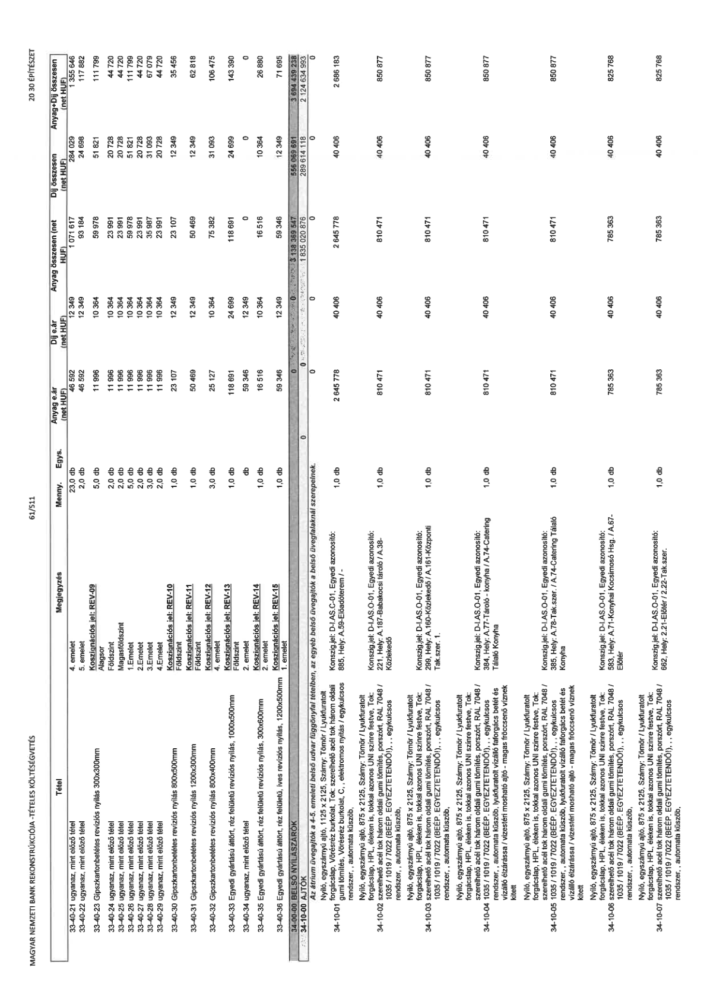

| Tétel | Megjegyzés | Menny. | Egys. | Anyag e.ár (net HUF) | Díj e.ár (net HUF) | Anyag összesen (net HUF) | Díj összesen (net HUF) | Anyag+Díj összesen (net HUF) |
|---|---|---|---|---|---|---|---|---|
| 33-40-21 ugyanaz, mint előző tétel | 4. emelet | 23,0 | db | 46 592 | 12 349 | 1 071 617 | 284 029 | 1 355 646 |
| 33-40-22 ugyanaz, mint előző tétel | 5. emelet | 2,0 | db | 46 592 | 12 349 | 93 184 | 24 698 | 117 882 |
| 33-40-23 Gipszkartonbetétes revíziós nyílás 300x300mm | Konszignációs jel: REV-09 Alagsor | 5,0 | db | 11 996 | 10 364 | 59 978 | 51 821 | 111 799 |
| 33-40-24 ugyanaz, mint előző tétel | Földszint | 2,0 | db | 11 996 | 10 364 | 23 991 | 20 728 | 44 720 |
| 33-40-25 ugyanaz, mint előző tétel | Magasföldszint | 2,0 | db | 11 996 | 10 364 | 23 991 | 20 728 | 44 720 |
| 33-40-26 ugyanaz, mint előző tétel | 1. emelet | 5,0 | db | 11 996 | 10 364 | 59 978 | 51 821 | 111 799 |
| 33-40-27 ugyanaz, mint előző tétel | 2. emelet | 2,0 | db | 11 996 | 10 364 | 23 991 | 20 728 | 44 720 |
| 33-40-28 ugyanaz, mint előző tétel | 3. emelet | 3,0 | db | 11 996 | 10 364 | 35 987 | 31 093 | 67 079 |
| 33-40-29 ugyanaz, mint előző tétel | 4. emelet | 2,0 | db | 11 996 | 10 364 | 23 991 | 20 728 | 44 720 |
| 33-40-30 Gipszkartonbetétes revíziós nyílás 800x500mm | Konszignációs jel: REV-10 Földszint | 1,0 | db | 23 107 | 12 349 | 23 107 | 12 349 | 35 456 |
| 33-40-31 Gipszkartonbetétes revíziós nyílás 1200x300mm | Konszignációs jel: REV-11 Földszint | 1,0 | db | 50 469 | 12 349 | 50 469 | 12 349 | 62 818 |
| 33-40-32 Gipszkartonbetétes revíziós nyílás 800x400mm | Konszignációs jel: REV-12 Földszint | 3,0 | db | 25 127 | 10 364 | 75 382 | 31 093 | 106 475 |
| 33-40-33 Egyedi gyártású áttört, réz felületű revíziós nyílás, 1000x500mm | Konszignációs jel: REV-13 Földszint | 1,0 | db | 118 691 | 24 699 | 118 691 | 24 699 | 143 390 |
| 33-40-34 ugyanaz, mint előző tétel | Konszignációs jel: REV-14 2. emelet | 0,0 | db | 59 346 | 12 349 | 0 | 0 | 0 |
| 33-40-35 Egyedi gyártású áttört, réz felületű revíziós nyílás, 300x600mm | 2. emelet | 1,0 | db | 16 516 | 10 364 | 16 516 | 10 364 | 26 880 |
| 33-40-36 Egyedi gyártású áttört, réz felületű, íves revíziós nyílás, 1200x500mm | Konszignációs jel: REV-15 1. emelet | 1,0 | db | 59 346 | 12 349 | 59 346 | 12 349 | 71 695 |
| 34-00-00 BELSŐ NYÍLÁSZÁRÓK | 0 | 0 | 0 | 0 | 0 | 3 138 369 547 | 556 069 691 | 3 694 439 238 |
| 34-10-00 AJTÓK | 0 | 0 | 0 | 0 | 0 | 1 835 020 876 | 289 614 118 | 2 124 634 993 |
| Az átrium üvegajtók a 4-5. emeleti belső udvar függönyfal tételben, az egyéb belső üvegajtók a belső üvegfalaknál szerepelnek. | NaN | NaN | NaN | 0 | 0 | 0 | 0 | 0 |
| 34-10-01 Nyíló, egyszárnyú ajtó, 1125 x 2125, Szárny: Tömör / Lyukfurtolt forgácslap. Vörösréz burkolat, Tok: szerelhető acél tok három oldali gumi tömítés, Vörösréz burkolat, C., elektromos nyitás / egykulcsos rendszer, , automata küszöb, | Konszignajel: D-I.AS.C-01. Egyedi azonosító: 885, Hely: A.59-Előadóterem / - | 1,0 | db | 2 645 778 | 40 406 | 2 645 778 | 40 406 | 2 686 183 |
| 34-10-02 Nyíló, egyszárnyú ajtó, 875 x 2125, Szárny: Tömör / Lyukfurtolt forgácslap, HPL éléken is, tokkal azonos UNI színre festve, Tok: szerelhető acél tok három oldali gumi tömítés, porszórt, RAL 7048 / 1035 / 1019 / 7022 (BÉÉP. EGYEZTETENDŐ!), , egykulcsos rendszer, , automata küszöb, | Konszign.jel: D-I.AS.O-01. Egyedi azonosító: 221, Hely: A.187-Babakocsi tároló / A.38-Közlekedő | 1,0 | db | 810 471 | 40 406 | 810 471 | 40 406 | 850 877 |
| 34-10-03 Nyíló, egyszárnyú ajtó, 875 x 2125, Szárny: Tömör / Lyukfurtolt forgácslap, HPL éléken is, tokkal azonos UNI színre festve, Tok: szerelhető acél tok három oldali gumi tömítés, porszórt, RAL 7048 / 1035 / 1019 / 7022 (BÉÉP. EGYEZTETENDŐ!), , egykulcsos rendszer, , automata küszöb, | Konszign.jel: D-I.AS.O-01. Egyedi azonosító: 299, Hely: A.160-Közlekedő / A.161-Központi Tak.szer. 1. | 1,0 | db | 810 471 | 40 406 | 810 471 | 40 406 | 850 877 |
| 34-10-04 Nyíló, egyszárnyú ajtó, 875 x 2125, Szárny: Tömör / Lyukfurtolt forgácslap, HPL éléken is, tokkal azonos UNI színre festve, Tok: szerelhető acél tok három oldali gumi tömítés, porszórt, RAL 7048 / 1035 / 1019 / 7022 (BÉÉP. EGYEZTETENDŐ!), , egykulcsos rendszer, automata küszöb, lyukfurtolt vízálló forgácslap betét és vízálló elzárássa / vízzáró mosható ajtó - magas fröccsenő víznek kitett | Konszign.jel: D-I.AS.O-01. Egyedi azonosító: 384, Hely: A.77-Tároló - konyha / A.74-Catering Tálaló Konyha | 1,0 | db | 810 471 | 40 406 | 810 471 | 40 406 | 850 877 |
| 34-10-05 Nyíló, egyszárnyú ajtó, 875 x 2125, Szárny: Tömör / Lyukfurtolt forgácslap, HPL éléken is, tokkal azonos UNI színre festve, Tok: szerelhető acél tok három oldali gumi tömítés, porszórt, RAL 7048 / 1035 / 1019 / 7022 (BÉÉP. EGYEZTETENDŐ!), , egykulcsos rendszer, , automata küszöb, lyukfurtolt vízálló forgácslap betét és vízálló elzárássa / vízzáró mosható ajtó - magas fröccsenő víznek kitett | Konszign.jel: D-I.AS.O-01. Egyedi azonosító: 385, Hely: A.78-Tak.szer. / A.74-Catering Tálaló Konyha | 1,0 | db | 810 471 | 40 406 | 810 471 | 40 406 | 850 877 |
| 34-10-06 Nyíló, egyszárnyú ajtó, 875 x 2125, Szárny: Tömör / Lyukfurtolt forgácslap, HPL éléken is, tokkal azonos UNI színre festve, Tok: szerelhető acél tok három oldali gumi tömítés, porszórt, RAL 7048 / 1035 / 1019 / 7022 (BÉÉP. EGYEZTETENDŐ!), , egykulcsos rendszer, , automata küszöb, | Konszign.jel: D-I.AS.O-01. Egyedi azonosító: 583, Hely: A.71-Konyhai Kocsimosó Hsg. / A.67-Előtér | 1,0 | db | 785 363 | 40 406 | 785 363 | 40 406 | 825 768 |
| 34-10-07 Nyíló, egyszárnyú ajtó, 875 x 2125, Szárny: Tömör / Lyukfurtolt forgácslap, HPL éléken is, tokkal azonos UNI színre festve, Tok: szerelhető acél tok három oldali gumi tömítés, porszórt, RAL 7048 / 1035 / 1019 / 7022 (BÉÉP. EGYEZTETENDŐ!), , egykulcsos rendszer, , automata küszöb, | Konszign.jel: D-I.AS.O-01. Egyedi azonosító: 662, Hely: A.21-Előtér / 2.22-Tak.szer. | 1,0 | db | 785 363 | 40 406 | 785 363 | 40 406 | 825 768 |
